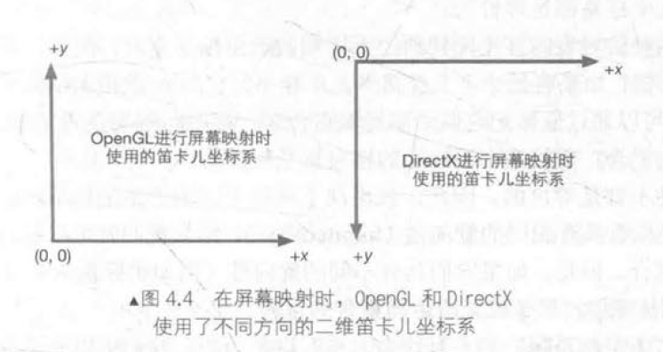

第4章 数学基础
旋转矩阵的几何意义解释
左手坐标系和右手坐标系
在二维笛卡儿坐标系中，我们总可以通过一些旋转操作来使坐标轴指向相同。从这种意义上来说，所有的二维笛卡儿坐标系都是等价的。
但对于三维笛卡儿坐标系，靠这种旋转有时并不能使两个不同朝向的坐标系重合。因此，就出现了两种不同的三维坐标系：左手坐标系和右手坐标系。


除了坐标轴朝向不同之外，左手坐标系和右手坐标系对于正向旋转的定义也不同，即左手法则(left-band rule)和右手法则(right-band rule)。


点和矢量
点(point)是n维空间中的一个位置，它没有大小、宽度这类概念。
矢量(vector)是指n维空间中一种包含了模(magnitude)和方向(direction)的有向线段。

矢量的模
三维矢量的模：\(|v|=\sqrt{v_x^2+v_y^2+v_z^2}\)

单位矢量
单位矢量指的是那些模为1的矢量，也被称为被归一化的矢量。归一化公式：\(\hat{v} = \frac{v}{|v|}\)
矢量的点积
公式：\(a \cdot b = a_x b_x + a_y b_y + a_z b_z\)


矢量的叉积
叉积的模：\(|a \times b| = |a||b|\sin\theta\)


矩阵
矩阵就是由m×n个标量组成的长方形数组。\(m_{ij}\)表明了这个元素在矩阵m的第i行、第j列。


注意：是矢量点乘的结果
特殊的矩阵


矩阵的几何意义：变换
线性变换与仿射变换
线性变换满足：\(f(x)+f(y)=f(x+y)\) 和 \(kf(x)=f(kx)\)
仿射变换就是合并线性变换和平移变换的变换类型。

齐次坐标
对于一个点，从三维坐标转换成齐次坐标是把其w分量设为1；对于方向矢量，需要把其w分量设为0。

基础变换矩阵
平移矩阵


缩放矩阵

旋转矩阵


复合变换
在绝大多数情况下，我们约定变换的顺序就是先缩放，再旋转，最后平移。
\(P_{new}=M_{translation}M_{rotation}M_{scale}P_{old}\)

坐标空间
我们需要在不同的情况下使用不同的坐标空间，因为一些概念只有在特定的坐标空间下才有意义。

坐标空间的变换
\(A_p=M_{c→p}A_c\) 和 \(B_c=M_{p→c}B_p\)


顶点的坐标空间变换过程
一个顶点最开始是在模型空间中定义的，最后它将会变换到屏幕空间中。

模型空间
Unity在模型空间中使用的是左手坐标系，+x轴、+y轴、+z轴分别对应的是模型的右、上和前向。

世界空间
顶点变换的第一步，就是将顶点坐标从模型空间变换到世界空间中。这个变换通常叫做模型变换(model transform)。

观察空间
Unity中观察空间使用的是右手坐标系：+x轴指向右方，+y轴指向上方，而+z轴指向的是摄像机的后方。


裁剪空间
裁剪空间的目标是能够方便地对渲染图元进行裁剪。


透视投影：


正交投影：

屏幕空间
经过投影矩阵的变换后，我们可以进行裁剪操作。完成裁剪后需要进行真正的投影，把视锥体投影到屏幕空间中。


总结